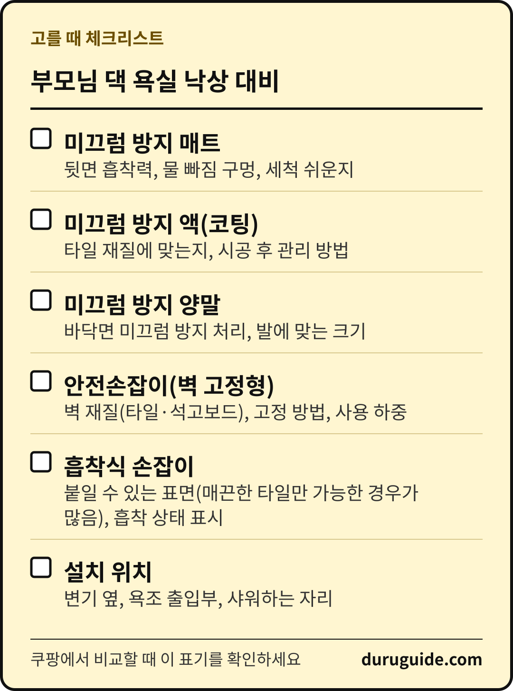

부모님 댁 욕실 낙상 대비, 미끄럼 방지 매트와 안전손잡이 고르는 법
이런 상황이죠
부모님 댁 욕실에서 "아이고" 하는 소리가 나서 뛰어가 보니 벽을 짚고 겨우 버티고 계셨다면, 그날부터 욕실이 계속 마음에 걸리실 거예요. 물기 있는 타일 바닥, 높은 욕조 턱, 변기에서 일어서는 동작까지 욕실은 집 안에서 미끄러지기 쉬운 곳이 모여 있는 공간입니다.
왜 생기나
욕실 낙상은 대개 몇 가지가 겹쳐서 일어나요.
- 물과 비누 — 타일 바닥에 물과 비눗기가 남으면 마찰이 크게 줄어요.
- 자세가 바뀌는 순간 — 변기에서 일어설 때, 욕조를 넘어갈 때, 쪼그려 앉았다 일어날 때 균형을 잃기 쉬워요.
- 잡을 곳이 없음 — 수건걸이나 세면대를 손잡이처럼 잡으시다가 그게 빠지거나 미끄러지기도 합니다. 수건걸이는 체중을 버티도록 만든 물건이 아니에요.
- 밤중 이용 — 잠결에 어두운 욕실로 들어가실 때 위험이 커집니다.
사기 전에 먼저 해볼 것
- 물기 바로 닦기 — 씻은 뒤 바닥 물기를 밀대로 밀어 두는 것만으로도 다음 사람이 덜 미끄러져요.
- 물건 정리 — 바닥에 놓인 대야·샴푸통·발판을 치워 걸려 넘어질 거리를 줄이세요.
- 동선 조명 — 침실에서 욕실까지 밤에 켜지는 작은 조명을 두세요.
- 앉아서 씻기 — 서서 씻는 시간을 줄이도록 안정적인 의자를 두는 것도 방법입니다. 플라스틱 목욕탕 의자처럼 낮고 가벼운 의자는 오히려 일어나기 어렵고 밀릴 수 있어요.
- 수건걸이 대신 잡을 곳 확인 — 지금 부모님이 어디를 짚고 일어나시는지 한번 지켜보세요. 그 자리가 손잡이가 필요한 자리입니다.
고를 때 체크리스트
| 품목 | 확인할 것 | 이유 |
|---|---|---|
| 미끄럼 방지 매트 | 뒷면 흡착력, 물 빠짐 구멍, 세척 쉬운지 | 매트 자체가 밀리면 더 위험하고, 물때가 끼면 미끄러워져요 |
| 미끄럼 방지 액(코팅) | 타일 재질에 맞는지, 시공 후 관리 방법 | 바닥 전체에 효과가 있지만 시간이 지나면 다시 관리가 필요해요 |
| 미끄럼 방지 양말 | 바닥면 미끄럼 방지 처리, 발에 맞는 크기 | 거실·침실에서 욕실까지 이동할 때 도움 |
| 안전손잡이(벽 고정형) | 벽 재질(타일·석고보드), 고정 방법, 사용 하중 | 벽에 제대로 고정되지 않으면 체중을 버티지 못해요 |
| 흡착식 손잡이 | 붙일 수 있는 표면(매끈한 타일만 가능한 경우가 많음), 흡착 상태 표시 | 흡착이 약해지면 떨어질 수 있어 체중을 완전히 싣는 용도로는 신중해야 해요 |
| 설치 위치 | 변기 옆, 욕조 출입부, 샤워하는 자리 | 실제로 짚고 일어나시는 위치에 달아야 의미가 있어요 |
벽에 구멍을 뚫는 고정형 손잡이는 벽 안쪽에 배관이 지나갈 수 있으니, 설치 경험이 없다면 시공 서비스를 함께 알아보시는 게 안전합니다.
장기요양등급이 있다면
장기요양등급(1~5등급, 인지지원등급)이 있으시면 복지용구 급여로 안전손잡이, 미끄럼방지용품(매트·액·양말), 목욕의자 등을 본인부담금만 내고 구입할 수 있어요. 품목별로 급여가 되는 제품과 수량이 정해져 있으니 복지용구 사업소나 국민건강보험공단에 먼저 확인해 보세요.
추천 제품 찾기
부모님이 욕실 어디에서 주로 짚고 일어나시는지, 벽과 바닥 재질이 무엇인지 먼저 확인한 다음 위 체크리스트 기준으로 쿠팡에서 비교해 보세요. 고정 방식과 사용 하중이 분명히 적힌 제품을 고르시는 게 좋습니다. 현재 가격은 쿠팡에서 확인해 주세요.

쿠팡에서 욕실 안전손잡이 보기
위 표의 표기를 비교해 보세요.
현재 가격은 쿠팡에서 확인해 주세요.
이 포스팅은 쿠팡 파트너스 활동의 일환으로, 이에 따른 일정액의 수수료를 제공받습니다.